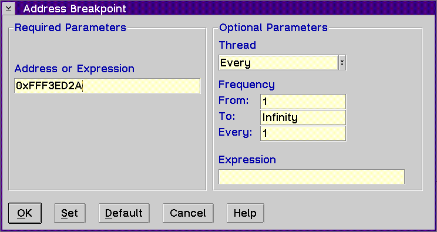

Displays the Address Breakpoint window, which allows you to set an address breakpoint to stop the execution of your program at a specific address.

The entry fields in this window are the same as in the Line Breakpoint window except for the following:
Type the name of the address or expression in the Address or Expression entry field.
For example, to set an address breakpoint for the address 0x000A1FCC, you would type one of the following in the Address entry field:
0x000A1FCC or A1FCC
The 0x is optional.
For a description of the types of data you can enter in the entry fields under the Optional Parameters group heading, refer to Set line....